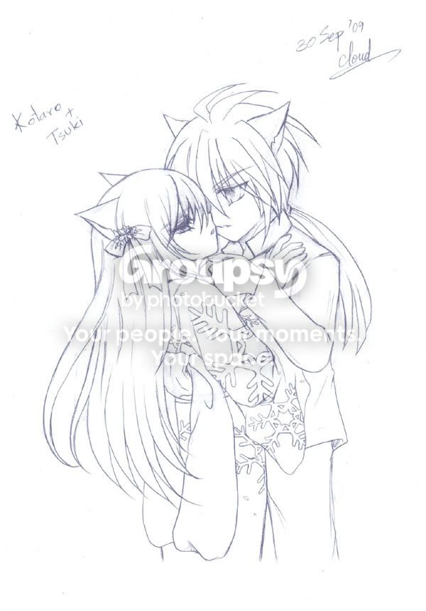

หน้า 4 จากทั้งหมด 7

โพสต์แล้ว:
ศุกร์ 02 ต.ค. 2009 12:18 pmโดย ECO
นั่งรอ......นั่งรอ...........................คลิ๊ก!!!.....(ปิดคอม)
โพสต์แล้ว:
เสาร์ 03 ต.ค. 2009 5:47 pmโดย ECO
ขอโทษนะทุกคน....คือว่า....
หนูอู้ไม่แต่งฟิค
ผลัวะ~!!!

ขอโทดค่า

เดี๋ยวพรุ่งนี้นะ - -*
โพสต์แล้ว:
เสาร์ 03 ต.ค. 2009 6:42 pmโดย ECO
ปิดคอม.....
โพสต์แล้ว:
อาทิตย์ 04 ต.ค. 2009 3:55 pmโดย ECO
ลงแล้วจ้า~~~ อยู่ที่chapter 3นะ~~
โพสต์แล้ว:
อาทิตย์ 04 ต.ค. 2009 6:18 pmโดย ECO
สนุกมากครับลุ้นเลยนะครับเนี่ยแต่งต่อไวๆนะครับ
ตาตัวละครผมสีน้ำตาลแก่ครับไม่ใช่อ่อนแต่จะเอาตามนั้นก็ได้ครับ
ป.ล.คุรซึกิโนะครับผมสงสัยว่าทำไมในบทเขาเรียกนามสกุลแทนชื่ออะครับ
โพสต์แล้ว:
อาทิตย์ 04 ต.ค. 2009 8:10 pmโดย ECO
รอๆ กำลังลุ้นว่าจะเกิดอะไรต่อ

+ แนะนำ จขกท. ทำลิงค์ตอนใหม่ไปไว้หน้าแรกด้วย กันกรณีหน้าเยอะแล้วหาไม่เจอ
โพสต์แล้ว:
อังคาร 06 ต.ค. 2009 2:08 pmโดย ECO
รู้สึกเหมือนตัวละครผมมันมีลางร้ายยังไงชอบกล
รึว่าจะได้เป็นผู้โชคดี(รึร้ายหว่า?)ที่ซึกิจังเคยบอกไว้...

โพสต์แล้ว:
อังคาร 06 ต.ค. 2009 9:25 pmโดย ECO
anlow เขียน:รู้สึกเหมือนตัวละครผมมันมีลางร้ายยังไงชอบกล
รึว่าจะได้เป็นผู้โชคดี(รึร้ายหว่า?)ที่ซึกิจังเคยบอกไว้...
โอ้ยยย ไม่ต้องคิดมากหรอก.....เจอผีนู๋มิโกะทุกคนน่ะแหละ~!!!
C.4 จะเป็นตอนของ Skyคุง ละก้อคนอื่นๆก็จะออกมาในC.นี้แหละจ้า~
โพสต์แล้ว:
พุธ 07 ต.ค. 2009 11:51 amโดย ECO
โธ่ถัง...เจอจะๆจังซี่
โทษใครดีเนี่ย 55+
โพสต์แล้ว:
ศุกร์ 09 ต.ค. 2009 5:59 pmโดย ECO

ล๊า ลา ลา ลา ลา ลา ลา ลา ลา ลา~~~~~~~
/me เสียสติ

โพสต์แล้ว:
ศุกร์ 09 ต.ค. 2009 11:10 pmโดย ECO
TsukinoChan เขียน:ล๊า ลา ลา ลา ลา ลา ลา ลา ลา ลา~~~~~~~
/me เสียสติ :second10:
เฮ้ยรูปนี้มันโคทาโร่ใช่มะครับ เท่เกินคาด = [ ] = " !!!!!!!!
โพสต์แล้ว:
จันทร์ 12 ต.ค. 2009 5:19 pmโดย ECO
โพสต์แล้ว:
จันทร์ 12 ต.ค. 2009 5:20 pmโดย ECO
Chapter IV : [ Approach Soul
]
“พลั่ก!!!!” เสียงวัตถุหนักๆตกลงมากระแทกพื้นเสียงดังสนั่น....
ฟีรัสค่อยๆชะเง้อหน้ามองลงไปยังพื้นดินด้านล่างอย่างระมัดระวัง...... ปรากฏว่า.....
ไม่มี....... พื้นดินด้านล่างกลับว่างเปล่า....ไม่มีร่างของผู้หญิงที่ร่วงลงมาเมื่อครู่...ไม่มีแม้แต่รอยเลือด....และสิ่งใดๆเลยนอกจากความว่างเปล่า......ทุกสิ่งที่เกิดขึ้นเมื่อครู่..ราวกับเป้นสิ่งที่ไม่ได้เกิดขึ้นจริงๆ...
“ฟีรัส....” ชินระเรียกชื่อเขาเบาๆ....
“มะ.....ไม่มีอะไร.... พวกเรารีบๆกลับกันดีกว่า.... ดูท่าทาง....เรื่องจะไม่ดีซะแล้วล่ะ....”
ฟีรัสพูดด้วยน้ำเสียงที่ไม่ค่อยจะดีนัก.... แล้วเดินนำกลุ่มไปเปิดประตูออกจากห้องเรียน... พวกเขารีบร้อนกันเดินลงบันใดไปยังชั้นที่หนึ่ง...ชินระเป็นคนสุดท้ายที่เดินลงมาหลังสุด...ทันทีที่เท้าของชินระก้าวลงบนขั้นบันใดลงสู่ชั้นที่1.... บานเลื่อนก็ลงมาปิดกั้นทางข้างหน้าของชินระทันที!!!...... จึงทำให้ชินระถุกแยกออกจากกลุ่มเหลือตัวคนเดียว...
“เฮ้!!! ชินระ !!! เป็นอะไรรึเปล่า!!!” เสียงโคทาโร่ตะโกนข้ามบานเลื่อนที่หนาแน่นเหมือนกับกำแพงเรือนจำ..
“ ไม่เป็นไร..”
“ใจเย็นๆ... อย่าพึ่งไปไหนนะ เดี๋ยวพวกเราจะหาทางอื่นไปหาเธอเดี๋ยวนี้แหละ...!” เคปเปอร์พูดแล้ววิ่งไปกับโคทาโร่อย่างรวดเร็ว.
“ ช่วยรอพวกฉันเดี๋ยวนะ..” ฟีรัสพูดประโยคสุดท้ายก่อนที่จะวิ่งออกห่างจากจุดที่ชินระถูกขัง.... ตอนนี้เหลือชินระที่อยู่ท่ามกลางความมืดเพียงลำพัง...
“เรื่องอะไรชั้นจะอยุ่เฉยๆให้โง่ล่ะ...” ชินระพูดลอยๆขึ้นมาคนเดียว.. แล้วกวาดกระบอกไฟฉายในมือสำรวจพื้นที่รอบๆตัว
“ คิก คิก คิก .” เสียงหัวเราะเล็กๆของเด็กผู้หญิงตัวเล็กๆดังขึ้นมาพร้อมกับเสียงฝีเท้าที่ดังขึ้นเบาๆราวกับเสียงกระซิบ..เสียงนั่นดังขึ้นมาใกล้ๆกับชินระ...... เธอรีบหันกระบอกไฟฉายไปยังต้นเสียงทันที....
ร่างของเด็กผู้หญิงผมสีน้ำเงินยาวถึงกลางหลัง ตัวเล็กๆ. ในชุดนอนกระโปรงลูกไม้สีเหลืองอ่อนวิ่งตัดหน้าชินระไป.... เด็กผู้หญิงคนนั้นวิ่งไปบนโถงทางเดินที่มืดมิดอย่างร่าเริง...
ชินระตัดสินใจที่จะเดินตามวิญญานของเด็กผู้หญิงคนนี้ไป.... วิญญานตัวน้อยวิ่งไปบนเส้นทางอันมืดมิดไปเรื่อยๆ..ราวกับว่าชินระไม่มีตัวตนสำหรับเธอ....
“ถึงแล้ว....ที่นี่แหละ...”
วิญญานตัวน้อยพูดขึ้นมาแล้วหันหน้ามายิ้มให้ชินระอย่างสดใส. นัยน์ตาสีน้ำเงินของหล่อนส่องแสงแวววาวก่อนที่ร่างของเธอจะเลือนหายไปในความมืด....
ชินระฉายไฟไปยังประตูห้องที่วิญญานตัวน้อยพาเธอมา....ป้ายบนบานประตูเหล็กเขียนไว้ว่า “ห้องควบคุมระบบ”
เธอค่อยๆเอื้อมมือน้อยๆของเธอไปจับลูกบิดประตูอย่างช้าๆ...
มั่บ!!! มือของใครคนหนึ่งคว้าข้อมือของชินระไว้ก่อนที่เธอจะผลักบานประตู. มือสีขาวซีดราวกับไร้เลือดกำลังกำข้อมือของชินระไว้อย่างแน่นหนา... ชินระรีบสะบัดแขนตัวเองให้หลุดออกจากมือของใครซักคน.. พลางหันหน้ามองเจ้าของมือที่ขัดขวางเธอไว้...
ผู้หญิงที่มีใบหน้าครึ่งบนเบลอๆเหมือนผิวน้ำที่ได้รับแรงกระทบกระเทือน.. ผิวของเธอซีดขาวราวกับศพและสวมชุดเครื่องแบบของอาจารย์ที่ขาดวิ่น.. ร่างกายของมันโปร่งใสจนสามารถมองทะลุไปเห็นด้านหลังได้... มันยื่นแขนทั้ง2ข้างพร้อมที่จะทำร้ายชินระได้ทุกเมื่อ..
ชินระรีบสะบัดไฟฉายในมือไปใส่มันอย่างเร็ว...... หายไปแล้ว!!! วิญญานหญิงไร้หน้าหายไปแล้ว...ชินระกวาดไฟฉายไปรอบๆตัวเพื่อให้แน่ใจว่าสิ่งที่เธอเจอเมื่ครู่ได้จากไปแล้วจริงๆ..
“!!!!” ฝ่ามือเย็นๆพุ่งมาบีบลงบนต้นคอของชินระจากด้านหลัง...แรงกดอันมหาศาลของวิญญาณร้ายตนนี้กดลงบนคอของชินระโดยที่ชิระไม่ทันได้ตั้งตัว. ก่อนที่สติของชินระจะเลือนลางมากไปกว่านี้... เธอจึงใช้แรงเฮือกสุดท้ายที่มี. สลัดตัวเองให้หลุดจากวิญญาณร้ายได้ในที่สุด.
“ทำยังไงดี... ทำยังไงดีถึงจะสามารถโต้ตอบไอ้วิญญาณอมตะนี่ไปให้พ้นๆซะที”
ชินระคิด.. พลางล้วงลงไปในกระเป๋ากระโปรงเพื่อหาบางสิ่งบางอย่างที่พอจะช่วยเยื้อชีวิตของตัวเองได้..
“อะ...ไอ้นี่มัน”
ชินระพบของบางสิ่งที่อาจจะพอช่วยชีวิตเธอได้.
ประจวบเหมาะกับจังหวะที่วิญญาณร้ายนั่นวิ่งทะลุกำแพงมาอย่างรวดเร็วหมายจะทำร้ายชินระอีกครั้งหนึ่ง!!!!
“จงหายไปซะ!!! เจ้าวิญญาณบาปหนา!!!”
ชินระสาดผงประหลาดสีขาวๆจากซองกระดาษเล็กๆที่พบในกระเป๋ากระโปรงใส่วิญญาณร้ายในระยะประชิด.
“ กรี๊ดดดดด!!!” วิญญาณสาวไร้หน้ากรีดร้องโหยหวนอย่างทรมานราวกับถูกไฟแผดเผาอย่างรุณแรง.... แล้วล้มลงบนพื้นชักดิ้นชักงอก่อนที่จะค่อยๆเลือนหายไปอย่างช้าๆ.
“ไม่นึกเลยแฮะ.... ว่าเกลือบริสุทธ์ไล่ปีศาจของเจ้าฟีรัสจะสามารถใช้ไล่วิญญาณได้จริงๆ”
ชินระกล่าวด้วยความโล่งใจเล็กๆ. บางสิ่งบางอย่างวางอยู่บนพื้นซึ่งเป็นจุดเดียวกับจุดที่วิญญาณหญิงไร้หน้าหายไปเมื่อครู่.. ชินระใช้ไฟฉายส่องไปยังสิ่งนั้น...
โพสต์แล้ว:
พุธ 14 ต.ค. 2009 4:41 pmโดย ECO
แล้วตอนใหม่ล่ะ????
ต้องเอาข้าวสารเสกกระตุ้นไหมครับ อิๆ
โพสต์แล้ว:
พฤหัสฯ. 15 ต.ค. 2009 8:50 pmโดย ECO
รอเดี่ยวๆ จะเสร็จแว้ว~~~